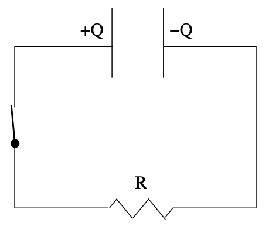

% %
%\[ \DeclarePairedDelimiters{\set}{\{}{\}} \DeclareMathOperator*{\argmax}{argmax} \]
19.1 패러데이 법칙
19.1.1 기전력과 자기선속
세번째 멕스웰 방정실인 페러데이의 법칙은 다음과 같다.
\[ \boxed{ \nabla \times \boldsymbol{E} = - \dfrac{\partial \boldsymbol{B}}{\partial t}. } \tag{19.1}\]
도선이 닫힌 경로 \(C\) 를 이루며 \(C\) 를 경계로 하는 평면 \(S\) 에 대해 스토크스 정리를 적용하면
\[ \oint_C \boldsymbol{E \cdot}\,d\boldsymbol{l} = - \int_S \dfrac{\partial \boldsymbol{B}}{\partial t}\boldsymbol{\cdot} d\boldsymbol{S} = - \dfrac{d}{dt} \int_S \boldsymbol{B \cdot}\,d\boldsymbol{S} \]
이다. 여기서 편미분이 전미분으로 바뀌는 것은 \(C\), 즉 \(S\) 가 시간에 대해 바뀌지 않을 때 이다. 여기서 우리는 기전력 (electromotive force, emf) \(\mathcal{E}\) 를 아래와 같이 정의한다.
\[ \boxed{\mathcal{E} := \oint_C \boldsymbol{E \cdot} \,d\boldsymbol{l}.} \tag{19.2}\]
기전력은 이름에 force 가 붙었지만 \(\boldsymbol{F}=\dot{\boldsymbol{p}}\) 의 힘은 아니며 식에서 보듯이 단위 전하가 경로의 접선 방향으로 받는 힘의 적분으로 전하가 닫힌 경로 \(C\) 를 한번 순회하며 하는 일이다. 또한
\[ F := \int_S \boldsymbol{B \cdot}\,d\boldsymbol{S} \]
를 자기선속(magnetic flux) 라고 하며 이로부터
\[ \mathcal{E} = - \dfrac{d F}{dt} \tag{19.3}\]
를 얻는다.
아래 그림 19.1 와 같이 평면상의 원형 도선에 자기장 \(\boldsymbol{B} = B\hat{\boldsymbol{z}}\) 가 통과한다고 하자.

\(\boldsymbol{B}\) 에 의한 자기선속이 감소한다고 하면, 즉 \(dB/dt < 0\) 이라면 기전력이 발생하며 반시계 방향의 전류 \(I\) 가 흐른다. 그런데 \(I\) 에 의한 자기장이 생기며 이렇게 전류 \(I\) 에 의해 유도된 자기장은 \(\hat{\boldsymbol{z}}\) 방향이므로 \(\boldsymbol{B}\) 의 감소를 억제하는 방향으로 발생한다. 이를 렌츠의 법칙 (Lenz’s law) 라고 한다.
예제 19.1 (자기장속의 움직이는 도선)

정적인 자기장에 위의 그림과 같이 직사각형을 이루는 도선이 배치되었으며 한 도선이 위의 그림과 같이 속도 \(\boldsymbol{v}=-v\hat{\boldsymbol{x}}\) 로 움직인다고 하자. 도선은 \(xy\) -평면상에 베치되어 있으며 \(\boldsymbol{B}=B\hat{\boldsymbol{z}}\) 이다. 도선의 \(x\) 방향 폭을 \(d\) 라고 하면 패러데이의 법칙에 따라
\[ \mathcal{E}=vBd \]
만큼의 기전력에 의헤 반시계 방향으로 전류가 흐르게 된다. 이것을 로렌츠 힘의 관점에서 보기로 하자. 움직이는 도선의 전하 \(q\) 가 받는 로렌츠힘 \(\boldsymbol{F}_q = q(-v\hat{\boldsymbol{x}}\times B\hat{\boldsymbol{z}}) = qvB\hat{\boldsymbol{y}}\) 이므로 단위 전하가 받는 에너지는 \(F_q\cdot d/q = vdB = \mathcal{E}\) 이다.
이제 회로에 전류가 흐르는 것을 안다. 그런데 이렇게 생긴 전류에 의해 자기장이 발생하며 이 자기장은 움직이는 도선의 닫힌 경로 부분에서 \(\hat{\boldsymbol{z}}\) 방향으로 \(dF/dt\) 를 증가시키게 되며 이는 \(-\hat{\boldsymbol{y}}\) 방향의 운동을 방해하는 방향으로, 즉 \(v\) 를 감소시키도록 작용한다. (렌츠의 법칙)
19.1.2 일반적인 경우

회로가 이루는 닫힌 경로 \(C\) 가 시간에 대해 자유롭게 움직이며 또한 \(B(t)\) 역시 변하는 경우를 생각하자. 작은 시간 \(\delta t\) 에 대해 자기 선속의 변화랑을 보면
\[ \begin{aligned} \delta F = F(t+\delta t) - F(t) &= \int_{S(t+\delta t)} \boldsymbol{B}(t+\delta t)\boldsymbol{\cdot}d\boldsymbol{S} - \int_{S(t)} \boldsymbol{B}(t)\boldsymbol{\cdot}d\boldsymbol{S} \\[0.3em] &= (\delta t)\int_{S(t)} \dfrac{\partial \boldsymbol{B}}{\partial t}\boldsymbol{\cdot}d\boldsymbol{S} + \left[\int_{S(t+\delta t)} - \int_{S(t)}\right] \boldsymbol{B}(t)\boldsymbol{\cdot}d\boldsymbol{S} + \mathcal{O}(\delta t^2) \end{aligned} \]
이다. 여기서 \(S(t)\) 에서 \(S(t+\delta t)\) 로 변하면서 생기는 부피의 경계면을 생각하자. \(S(t)\) 와 \(S(t+\delta t)\) 를 제외한 경계먼을 \(S_c\) 라고 하고 \(\nabla \boldsymbol{\cdot B}=0\) 임을 생각하면
\[ \delta F = (\delta t)\int_{S(t)} \dfrac{\partial \boldsymbol{B}}{\partial t}\boldsymbol{\cdot}d\boldsymbol{S} - \int_{S_C} \boldsymbol{B}(t)\boldsymbol{\cdot}d\boldsymbol{S} + \mathcal{O}(\delta t^2) \]
또한 \(S_C\) 의 면적 성분 \(d\boldsymbol{S}\) 는 \(C(t)\) 경로를 따르는 \(d\boldsymbol{l}\) 에 대해 \(d\boldsymbol{S} = (d\boldsymbol{l}\times \boldsymbol{v})\delta t\) 로 쓸 수 있으므로
\[ \delta F = (\delta t)\int_{S(t)} \dfrac{\partial \boldsymbol{B}}{\partial t}\boldsymbol{\cdot}d\boldsymbol{S} - (\delta t)\int_{C(t)} (\boldsymbol{v}\times \boldsymbol{B})\boldsymbol{\cdot}d\boldsymbol{l} + \mathcal{O}(\delta t^2) \]
이다. 따라서
\[ \begin{aligned} \dfrac{dF}{dt} &= \int_{S(t)} \dfrac{\partial \boldsymbol{B}}{\partial t}\boldsymbol{\cdot} d\boldsymbol{S} - \int_{C(t)} (\boldsymbol{v}\times \boldsymbol{B})\boldsymbol{\cdot} d\boldsymbol{l} \\[0.3em] &= -\int_{S(t)}\nabla \times \boldsymbol{E} \boldsymbol{\cdot} d\boldsymbol{S} - \int_{C(t)} (\boldsymbol{v}\times \boldsymbol{B})\boldsymbol{\cdot} d\boldsymbol{l} \\[0.3em] &= -\int_{C(t)} (\boldsymbol{E} + \boldsymbol{v}\times \boldsymbol{B})\boldsymbol{\cdot} d\boldsymbol{l} \end{aligned} \]
이다. 그리고 이제 로렌츠 힘을 받았을 때의 기전력을 생각하면 위 식은 \(-\mathcal{E}\) 와 같음을 안다. 즉
\[ \mathcal{E} = - \dfrac{dF}{dt} \]
이다.
19.1.3 인덕턴스와 자기에너지
16.3.3 에서 우리는 전하로 이루어진 정전기 시스템을 구성하는데 필요하는 에너지를 계산하였다. 그러나 아직까지 자기장에 대해서는 비슷한 작업을 하지 않았는데 이는 전류들의 모임에 대해 기전력에 대해 아는 것이 필요했기 때문에다. 그리고 이를 위해서는 몇가지 개념이 필요하다.
Inductance
곡선 \(C\) 를 흐르는 전류 \(I\) 가 자기 선속 \(F=\int_S \boldsymbol{B\cdot}d\boldsymbol{S}\) 를 발생시킬 때 인덕턴스 \(L\) 은 다음과 같이 정의된다.
\[ \boxed{L = \dfrac{F}{I}.} \tag{19.4}\]
예제 19.2 (솔레노이드의 인덕턴스)

길이 \(h\), 단면적 \(A\) 로 이루어진 위의 그림과 같은 솔레노이드를 생각하자. \(h \gg \sqrt{A}\) 를 가정하여 솔레노이드의 양 끝에서 발생하는 효과를 무시하자. 단위 길이당 감은 횟수 \(N\) 에 전류 \(I\) 가 흐른다면 예제 18.2 에서 보았듯이 솔레노이드 내부의 자기장 \(B = \mu_0 N I\) 이며 총 \(Nh\) 개의 원형 회로가 있는 것으로 생각 할 수 있으므로 자기 선속 \(F = \mu_0 N^2 IAh = \mu_0 N^2 IV_S\) 이다. 여기서 \(V_S = Ah\) 는 솔레노이드의 부피이다. 그렇다면 솔레노이드에 의한 인덕턴스 \(L = \mu_0 N^2 V_S\) 이다.
19.1.4 정자기 에너지
닫힌회로 \(C\) 에 시간에 따라 변하는 전류 \(I(t)\) 가 흐른다고 하자. 그렇다면 기전력은
\[ \mathcal{E} = - \dfrac{dF}{dt} = -L \dfrac{dI}{dt} \]
이다. 기전력은 단위 전하가 회로를 한번 순활할 때 얻는 에너지 이다. 시간 \(\delta t\) 동안 \(I\delta t\) 의 전하가 회로를 흐르므로 \(\delta t\) 시간동안 이 회로에 해준 일 \(\delta W\) 는
\[ \delta W = \mathcal{E}I\delta t = -LI \dfrac{dI}{dt}\delta t \]
이며, 이를 이용하면
\[ \dfrac{dW}{dt}= - LI\dfrac{dI}{dt}= \dfrac{d}{dt}\left(-\dfrac{LI^2}{2} \right) \]
임을 알 수 있다. 즉 이 시스템의 에너지 증가는
\[ W = \dfrac{LI^2}{2} = \dfrac{FI}{2} \]
이다. 이로부터
\[ U = \dfrac{I}{2}\int_S \boldsymbol{B \cdot}d\boldsymbol{S} = \dfrac{I}{2}\int_S (\nabla \times \boldsymbol{A})\boldsymbol{\cdot}\,d\boldsymbol{S} = \dfrac{I}{2} \oint_C \boldsymbol{A \cdot}d\boldsymbol{l} = \dfrac{1}{2}\int_V \boldsymbol{J \cdot A}\,d^3\boldsymbol{r} \]
여기서 \(\nabla \times \boldsymbol{B} = \mu_0 \boldsymbol{J}\) 와 벡터 항등식 \(\nabla \boldsymbol{\cdot}(\boldsymbol{B}\times \boldsymbol{A}) = (\nabla \times \boldsymbol{B})\boldsymbol{\cdot A} - (\nabla \times \boldsymbol{A})\boldsymbol{\cdot B}\) 를 사용하면
\[ \begin{aligned} U &= \dfrac{1}{2\mu_0} \int \left[(\nabla \times \boldsymbol{B}) \boldsymbol{\cdot A}\right]\,d^3\boldsymbol{r} \\[0.3em] &= \dfrac{1}{2\mu_0} \left[\int \nabla \boldsymbol{\cdot}(\boldsymbol{B}\times \boldsymbol{A}) \, d^3\boldsymbol{r} + \int (\nabla \times \boldsymbol{A})\boldsymbol{\cdot B} \,d^3\boldsymbol{r}\right] \\[0.3em] &=\dfrac{1}{2\mu_0} \oint_S (\boldsymbol{B}\times \boldsymbol{A})\boldsymbol{\cdot}d\boldsymbol{S} + \dfrac{1}{2\mu_0} \int \|\boldsymbol{B}\|^2\,d^3\boldsymbol{r} \end{aligned} \]
을 얻는다. 여기서 \(\|\boldsymbol{B} \times \boldsymbol{A}\|\) 는 \(1/r^2\) 보다 빠르게 감소하므로 우주 전체에 대해 적분하면 \(\oint_S (\boldsymbol{B}\times \boldsymbol{A})\boldsymbol{\cdot}d\boldsymbol{S} =0\) 이며 따라서
\[ U = \dfrac{1}{2\mu_0}\int \|\boldsymbol{B}\|^2\,d^3\boldsymbol{r} \]
이다. 이를 식 16.32 와 함께 생각하면
\[ U = \int \left(\dfrac{\epsilon_0 \|\boldsymbol{E}\|^2}{2} + \dfrac{\|\boldsymbol{B}\|^2}{2\mu_0}\right)\,d^3\boldsymbol{r} \]
이 된다. 여기에 몇가지 생각할 것이 있다.
(\(1\)) 전기장의 에너지를 논할때와 마찬가지로 우리는 전하와 전류의 시스템을 구성하는데 필요한 에너지가 아닌 일종의 전기장과 자기장에 축적된 에너지를 계산하였다. 이것은 뒤에 논하기로 하자.
(\(2\)) 위 식은 전기장에 의한 에너지와 자기장에 의한 에너지의 단순합이며 가능한 \(\boldsymbol{E \cdot B}\) 혹은 유사한 전기장, 자기장에 동시에 의존하는 항을 무시하였다. 그러나 이런 항은 없으며 위의 식이 전체 에너지임을 이후에 보일것이다.
19.1.5 저항
지금까지는 기전력 \(\mathcal{E}\) 에 의해 전류 \(I\) 가 흐른다는 것을 가정했다. 기전력은 앞서 말했듯이 단위 전하당 축적되는 역학적 에너지로 전하는 가속을 받게 되며 따라서 전류는 증가해야 한다. 전하가 가속을 받았을 때 벌어지는 일에 대해서는 차후에 다루기로 하고, 전하가 속도를 가지고 실제 물체를 이동하게 되면 다양한 요인에 의해 가속이 억제되며 결국은 어떤 속도를 유지하게 된다. 즉 전류가 일정해진다. 많은 경우 이 효과를 저항(resistance) \(R\) 로 정량화 하며 아래의 옴의 법칙 (Ohm’s law) 을 따른다.
\[ \boxed{\mathcal{E} = IR.} \tag{19.5}\]
저항은 단면적 (\(A\)) 에 반비례하며 길이 (\(L\)) 에 비례한다. 이때 비례상수 \(\rho_R\) 은 \(R=\rho_R L/A\) 이며 \(\rho_R\) 을 비저항 (resistivity) 라고 하고 역수 \(\sigma = 1/\rho_R\) 을 전도율 (conductivity) 라고 한다. 이 때 비저항 즉 전도율은 물질의 고유한 특성이다. 단면적 \(A\), 길이 \(L\) 인 원통에 전기장 \(\boldsymbol{E}\), 전류밀도 \(\boldsymbol{J}\) 가 균일하게 존재한다고 하면
\[ \mathcal{E}=\int_0^L \boldsymbol{E}\,dx = R\int_A \boldsymbol{J}dS = IR \]
이며
\[ \boxed{\boldsymbol{J}= \sigma \boldsymbol{E}} \tag{19.6}\]
를 얻는다. 위 식은 일반화된 옴의 법칙 (generalized Ohm’s law) 이라고 한다. 옴의 법칙은 멕스웰 방정식과 같은 근본 법칙이 아니라 일종의 실험적 일반화이며 모든 물질이 옴의 법칙을 따르는 것도 아니다.
19.2 변위전류
19.2.1 변위전류의 도입
앙페르의 법칙은 \(\nabla \times \boldsymbol{B} = \mu_0 \boldsymbol{J}\) 이며 관련된 멕스웰 방정식은
\[ \nabla \times \boldsymbol{B} = \mu_0 \left(\boldsymbol{J} + \epsilon_0 \dfrac{\partial \boldsymbol{E}}{\partial t}\right) \tag{19.7}\]
이다. 여기서 \(\epsilon_0 \partial_t \boldsymbol{E}\) 는 전류밀도와 같은 지위를 차지하고 있는, 실제 전하의 흐름과 무관한 어떤 값으로 변위전류 (displacement current) 라고 한다.
멕스웰의 4 방정식에서 앙페르 법칙을 제외한 세 방정식과 변위전류가 없는 형태는 많은 물리학자의 노력으로 실험적으로 잘 정립된 상태였다. 멕스웰이 기존의 전자기 방정식을 종합하여 멕스웰 방정식을 만들 때 대부분의 노력은 변위전류 부분에 소모되었다. 이제 그 이유를 살펴보자. 변위전류가 없는 앙페르 법칙으로부터 다음을 얻는다.
\[ \mu_0 \nabla \boldsymbol{\cdot J} = \nabla \boldsymbol{\cdot}(\nabla \times \boldsymbol{B}) = 0. \]
\(\nabla \boldsymbol{\cdot J}=0\) 은 어떤 부피로 유입되는 전류의 합은 \(0\) 이라는 것을 의미한다. 하지만 실제로 그렇지 않다!. 아래와 같은 간단한 회로를 생각하자.
